Clustering and PCA
Julia Fukuyama
PCA and Clustering
PCA
Clustering
A contrived example
Suppose we have a 3-dimensional object that we want to
investigate.
Due to some strange set of constraints, we are only allowed to see
its shadow.
Without knowing anything about the object, what sort of a shadow
would you expect to be most useful?
It seems like the most useful shadow is the biggest one: If we were
only allowed one view, we would ask for the one that took up the most
space.
It’s easy to come up with examples where this isn’t the most useful,
but it’s a good place to start if you don’t know anything about the
data.
The same will be true of PCA.
PCA as variance maximization
In PCA, we have a data matrix \(\mathbf X
\in \mathbb R^{n \times p}\) with centered columns.
We think of the rows of \(\mathbf
X\) as points in \(p\)-dimensional space, and we want to
project the points down into a lower-dimensional space so we can
visualize them.
There are a lot of different ways we could do this, but in PCA we
want to find the projection that maximizes the variance of the projected
points.
Example
library(devtools)
install_github("vqv/ggbiplot")
library(ade4)
library(ggbiplot)
library(viridis)
Olympic dataset
data(olympic)
summary(olympic$tab)
## 100 long poid haut
## Min. :10.62 Min. :6.220 Min. :10.27 Min. :1.790
## 1st Qu.:11.02 1st Qu.:7.000 1st Qu.:13.15 1st Qu.:1.940
## Median :11.18 Median :7.090 Median :14.12 Median :1.970
## Mean :11.20 Mean :7.133 Mean :13.98 Mean :1.983
## 3rd Qu.:11.43 3rd Qu.:7.370 3rd Qu.:14.97 3rd Qu.:2.030
## Max. :11.57 Max. :7.720 Max. :16.60 Max. :2.270
## 400 110 disq perc
## Min. :47.44 Min. :14.18 Min. :34.36 Min. :4.000
## 1st Qu.:48.34 1st Qu.:14.72 1st Qu.:39.08 1st Qu.:4.600
## Median :49.15 Median :15.00 Median :42.32 Median :4.700
## Mean :49.28 Mean :15.05 Mean :42.35 Mean :4.739
## 3rd Qu.:49.98 3rd Qu.:15.38 3rd Qu.:44.80 3rd Qu.:4.900
## Max. :51.28 Max. :16.20 Max. :50.66 Max. :5.700
## jave 1500
## Min. :49.52 Min. :256.6
## 1st Qu.:55.42 1st Qu.:266.4
## Median :59.48 Median :272.1
## Mean :59.44 Mean :276.0
## 3rd Qu.:64.00 3rd Qu.:286.0
## Max. :72.60 Max. :303.2
oly_noscale = prcomp(olympic$tab, scale. = FALSE)
oly_noscale$rotation[,1:2]
## PC1 PC2
## 100 -0.0045042348 0.005632863
## long 0.0084964324 -0.013772028
## poid -0.0294931259 -0.155510542
## haut 0.0007153041 -0.002667193
## 400 -0.0455887408 -0.001324105
## 110 -0.0050441978 0.010836485
## disq -0.1184059716 -0.352166545
## perc 0.0003427802 -0.019704006
## jave -0.0525411029 -0.917592971
## 1500 -0.9900266310 0.095301595
PCA Biplots
Two types of biplots, form and covariance. Let’s
start off with the form biplot.
- For each sample we plot a point with the sample scores along the
principal axes.
- For each variable, we make an arrow with the variable weights along
the principal axes.
This allows us to read off the sample scores along the principal axes
and the variable weights along the principal axes.
PCA biplot for the olympic data
## scale = 0 means form biplot
ggbiplot(oly_noscale, scale = 0) + ylim(c(-17, 10))
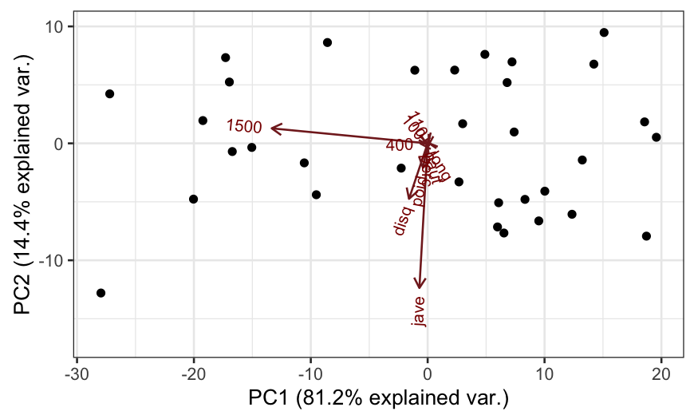
Covariance biplot
The covariance biplot is very subtly different from the form
biplot, the difference being how the singular values are allocated.
In this form of the biplot, angles between biplot axes give us
approximations of the covariances between the variables.
Covariance biplot
## scale = 1 means covariance biplot
ggbiplot(oly_noscale, scale = 1)
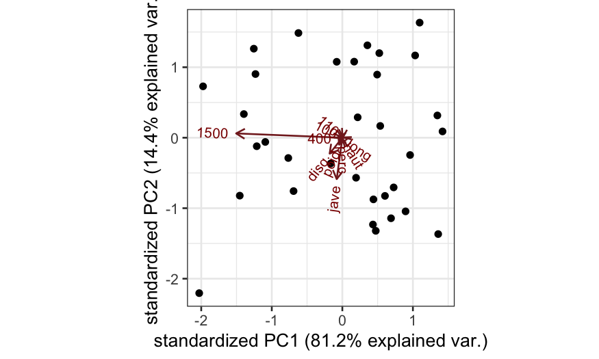
Correlation-based PCA
The example above suggests that doing PCA when the variables are on
different scales isn’t always that useful.
When the variables are on different scales and measure different
things, we often standardize the columns of \(\mathbf X\) (divide each column by its
standard deviation) before performing PCA.
This is sometimes referred to as correlation-based PCA, as opposed to
covariance-based PCA.
Correlation-based PCA biplot
Analogous to the covariance-based PCA biplot:
- Sample points represent the scores on the principal axes.
- Variable points represent variable weights on the principal
axes.
Relationships between the variables:
- Projections of biplot axes onto each other now describe correlations
between variables instead of covariances.
Covariance PCA biplot based on correlations, with some extra
information:
oly_scale = prcomp(olympic$tab, scale. = TRUE)
## scale = 1 means covariance biplot
ggbiplot(oly_scale, scale = 1)
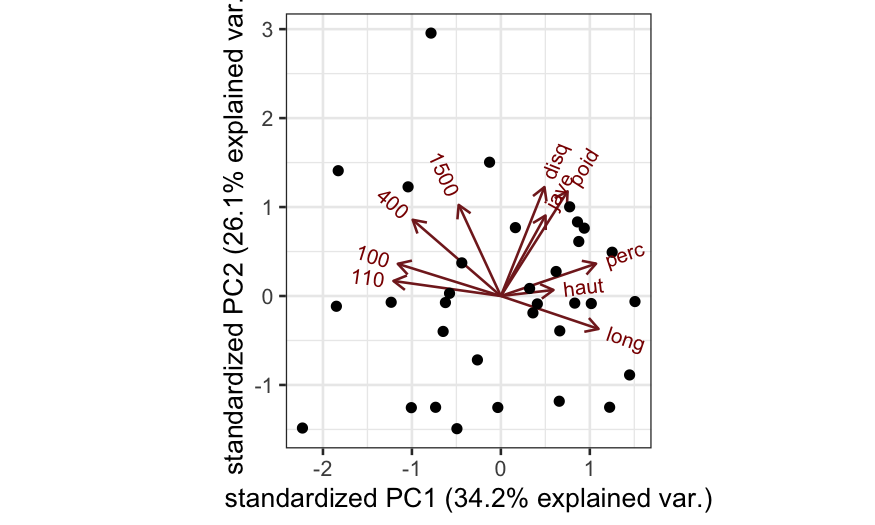
How would you interpret the first principal component?
Covariance PCA biplot based on correlations, with some extra
information:
## scale = 1 means covariance biplot
ggbiplot(oly_scale, scale = 1) +
geom_point(aes(color = olympic$score)) +
scale_color_viridis("Score")
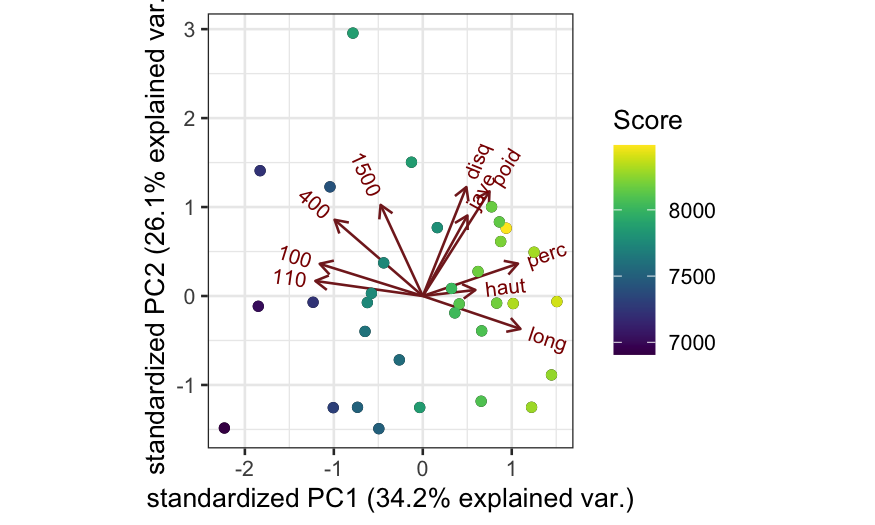
Summing up
Interpretation of PCA:
- Visualization of the elements of the matrix
- Visualization of the correlation/covariance among the variables
Two kinds of PCA:
- Covariance-based PCA: columns of the data matrix are centered but
not scaled, implemented with
scale. = FALSE in
prcomp (the default)
- Correlation-based PCA: columns of the data matrix are centered and
scaled, implemented with
scale. = TRUE in
prcomp
Two kinds of PCA biplot:
- Form biplot: More informative about the relationships between the
samples, implemented with
scale = 0 in
ggbiplot
- Covariance biplot: More informative about relationships between
variables, implemented with
scale = 1 in
ggbiplot
K-means clustering
Notation: \(C_1, \ldots, C_K\)
denote sets containing the indices of the observations in each cluster.
These sets form a partition of the observations, that is: 1. \(C_1 \cup C_2 \cup \cdots \cup C_K = \{1,\ldots,
n\}\). 2. \(C_k \cap C_{k'} =
\emptyset\) for all \(k \ne
k'\).
The \(K\)-means problem is then to
find \(C_1,\ldots, C_k\) that solves
the problem \[
\text{minimize}_{C_1,\ldots, C_K} \left\{ \sum_{k=1}^K W(C_k) \right\}
\] where \[
W(C_k) = \frac{1}{|C_k|} \sum_{i, i' \in C_k} \sum_{j=1}^p (x_{ij} -
x_{i'j})^2
\]
The \(K\)-means clustering
algorithm
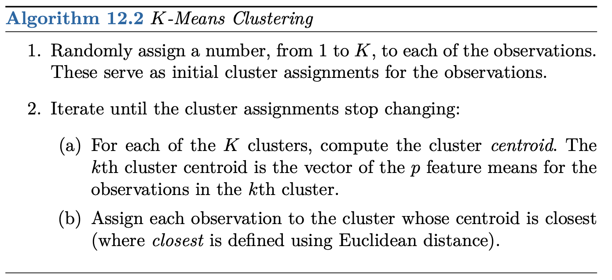
The \(K\)-means clustering
algorithm in pictures
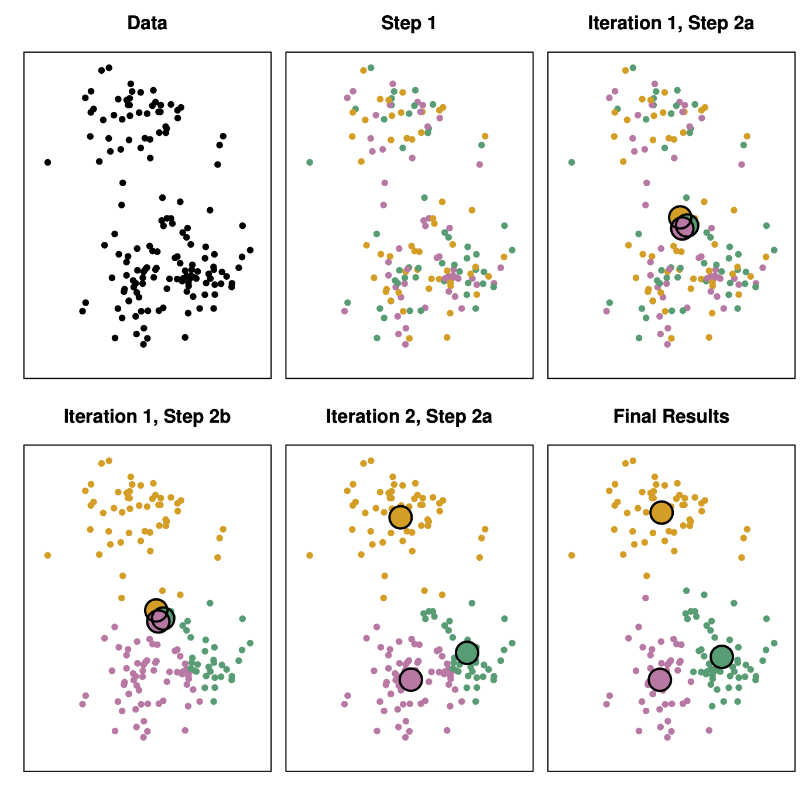
Main issue: How to choose the number of clusters?
Options:
- Elbow method (look for a “kink” in the plot of the within-cluster
sum of squares)
- Gap statistic (look at the difference between the within-cluster sum
of squares and what the within-cluster sum of squares would be if the
samples were distributed uniformly.)
- Silhouette plot (plot of how well clustered each point is, see here)
Example
Load packagies and data, remove NAs, scale all the variables in the
data frame.
library(tidyverse) # data manipulation
library(cluster) # clustering algorithms
library(factoextra) # clustering algorithms & visualization
df <- USArrests
df <- na.omit(df)
df <- scale(df)
Using the kmeans function to cluster, look at the output
using fviz_cluster.
k2 <- kmeans(df, centers = 2, nstart = 25)
str(k2)
## List of 9
## $ cluster : Named int [1:50] 2 2 2 1 2 2 1 1 2 2 ...
## ..- attr(*, "names")= chr [1:50] "Alabama" "Alaska" "Arizona" "Arkansas" ...
## $ centers : num [1:2, 1:4] -0.67 1.005 -0.676 1.014 -0.132 ...
## ..- attr(*, "dimnames")=List of 2
## .. ..$ : chr [1:2] "1" "2"
## .. ..$ : chr [1:4] "Murder" "Assault" "UrbanPop" "Rape"
## $ totss : num 196
## $ withinss : num [1:2] 56.1 46.7
## $ tot.withinss: num 103
## $ betweenss : num 93.1
## $ size : int [1:2] 30 20
## $ iter : int 1
## $ ifault : int 0
## - attr(*, "class")= chr "kmeans"
fviz_cluster(k2, data = df)
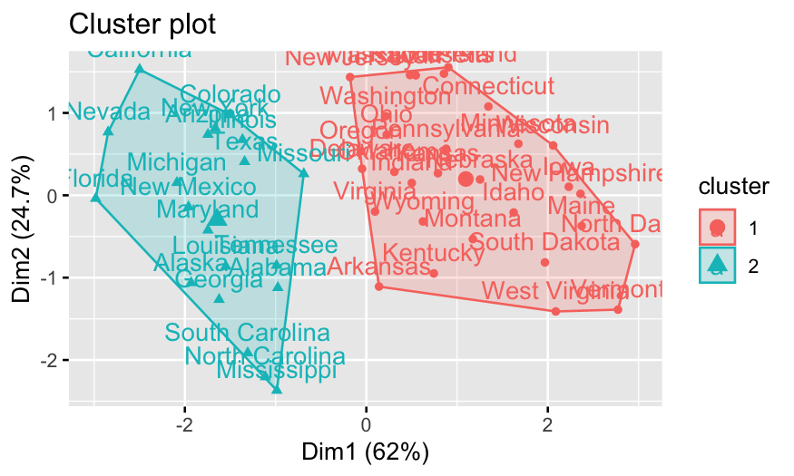
Look at different clustering solutions.
k3 <- kmeans(df, centers = 3, nstart = 25)
k4 <- kmeans(df, centers = 4, nstart = 25)
k5 <- kmeans(df, centers = 5, nstart = 25)
# plots to compare
p1 <- fviz_cluster(k2, geom = "point", data = df) + ggtitle("k = 2")
p2 <- fviz_cluster(k3, geom = "point", data = df) + ggtitle("k = 3")
p3 <- fviz_cluster(k4, geom = "point", data = df) + ggtitle("k = 4")
p4 <- fviz_cluster(k5, geom = "point", data = df) + ggtitle("k = 5")
library(gridExtra)
grid.arrange(p1, p2, p3, p4, nrow = 2)
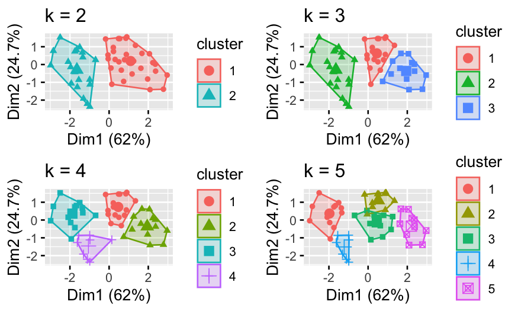
Look at the within-cluster sum of squares:
set.seed(123)
fviz_nbclust(df, kmeans, method = "wss")
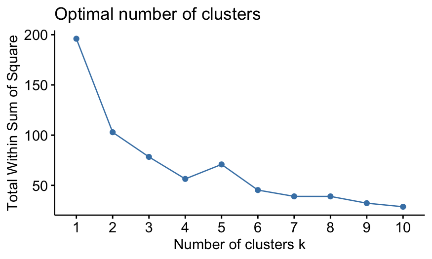
What does the gap statistic tell us about the number of clusters?
gap_stat <- clusGap(df, FUN = kmeans, nstart = 25,
K.max = 10, B = 50)
## Clustering k = 1,2,..., K.max (= 10): .. done
## Bootstrapping, b = 1,2,..., B (= 50) [one "." per sample]:
## .................................................. 50
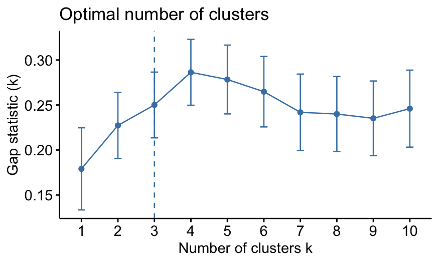
Look at the silhouette plots:
sil2 <- silhouette(k2$cluster, dist(df))
p1 <- fviz_silhouette(sil2)
## cluster size ave.sil.width
## 1 1 30 0.43
## 2 2 20 0.37
sil3 <- silhouette(k3$cluster, dist(df))
p2 <- fviz_silhouette(sil3)
## cluster size ave.sil.width
## 1 1 17 0.32
## 2 2 20 0.26
## 3 3 13 0.37
sil4 <- silhouette(k4$cluster, dist(df))
p3 <- fviz_silhouette(sil4)
## cluster size ave.sil.width
## 1 1 16 0.34
## 2 2 13 0.37
## 3 3 13 0.27
## 4 4 8 0.39
sil5 <- silhouette(k5$cluster, dist(df))
p4 <- fviz_silhouette(sil5)
## cluster size ave.sil.width
## 1 1 12 0.29
## 2 2 10 0.19
## 3 3 11 0.25
## 4 4 7 0.43
## 5 5 10 0.40
grid.arrange(p1, p2, p3, p4, nrow = 2)
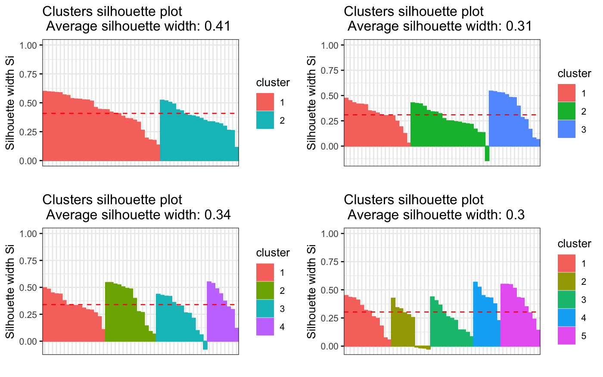
Look at what the average silhouette width tells us about the number
of clusters.
fviz_nbclust(df, kmeans, method = "silhouette")
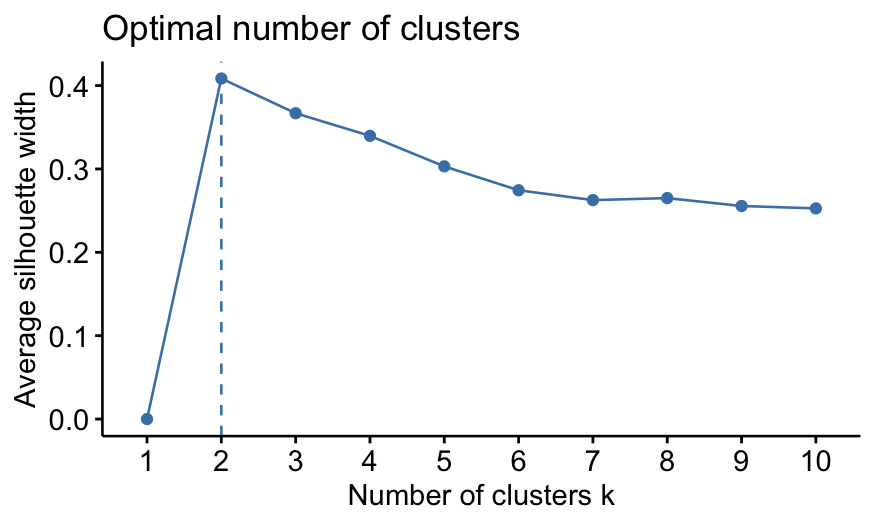